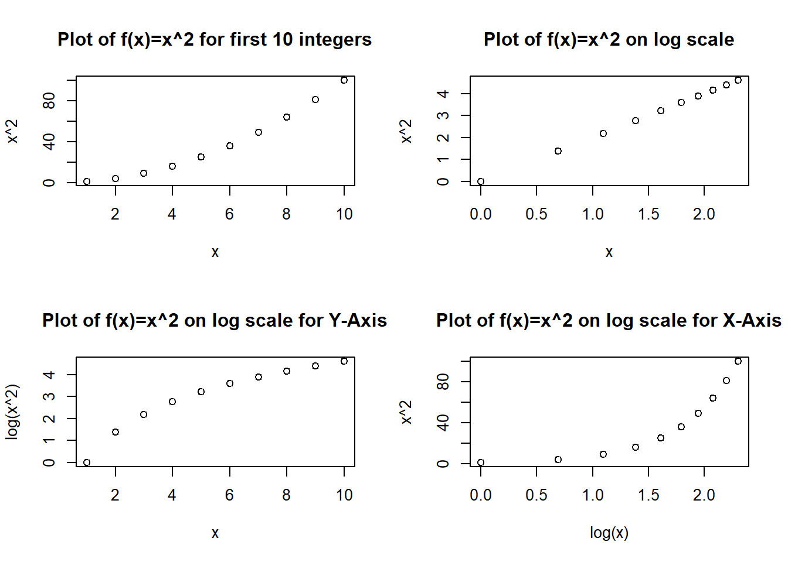
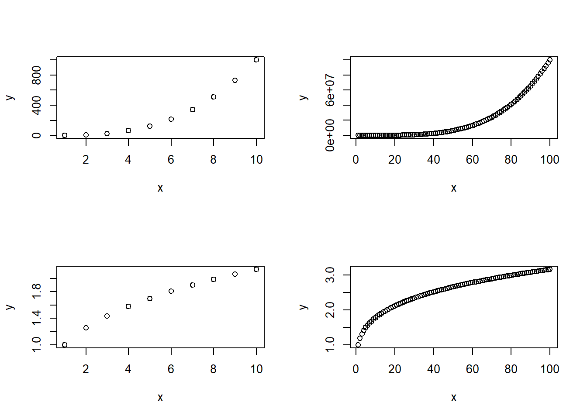
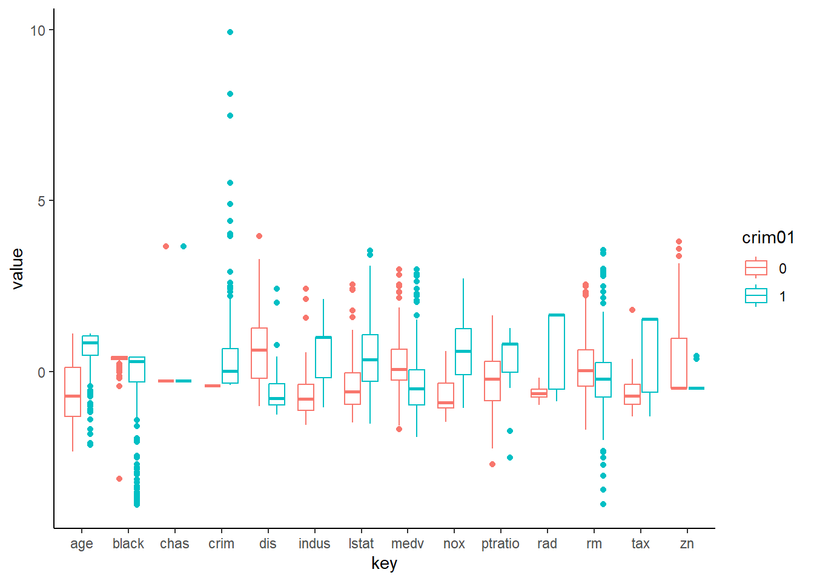

library(ISLR)
library(MASS)
library(kableExtra)
library(tidyverse)
library(corrplot)Chapter 4 (Exercises)
Classification
Conceptual
Question 2
The proof is as follows: \[ p_k(x) = \frac {\pi_k \frac{1}{\sqrt{2\pi}\sigma} \ exp{(-\frac{1}{2\sigma^2}{(x-\mu_k)^2})}}{\sum_{l = 1}^K\pi_l \frac{1}{\sqrt{2\pi}\sigma} \ exp{(-\frac{1}{2\sigma^2}{(x-\mu_k)^2})}} \qquad \qquad (4.12)\] \[ p_k(x) = \frac {\pi_k \ exp{(-\frac{1}{2\sigma^2}{(x-\mu_k)^2})}}{\sum_{l = 1}^K\pi_l \ exp{(-\frac{1}{2\sigma^2}{(x-\mu_k)^2})}} . \frac{\frac{1}{\sqrt{2\pi}\sigma}}{\frac{1}{\sqrt{2\pi}\sigma}} \qquad \qquad equation \ 2\] \[ p_k(x) = \frac {\pi_k \ exp{(-\frac{1}{2\sigma^2}{(x-\mu_k)^2})}}{\sum_{l = 1}^K\pi_l \ exp{(-\frac{1}{2\sigma^2}{(x-\mu_k)^2})}} \]
The denominator is does not depend on the value of \(k\), thus the value of \(k\) for which \(p_k(x)\) will be maximized will be the same as the value for which numerator of \(equation 2\) is maximized, i.e. \[ \pi_k \ exp{(-\frac{1}{2\sigma^2}{(x-\mu_k)^2})} \qquad \qquad expression \ 1\] Now, \(log\) is a monotonous function, this means the value of \(expression \ 1\) will be maximized its \(log\) is maximized. Thus, taking its log and calling it \(\delta_k(x)\), \[ \delta_k(x) = log(\pi_k) -\frac{(x-\mu_k)^2}{2\sigma^2}\] \[ \delta_k(x) = log(\pi_k) -\frac{x^2 + \mu_k^2 -2x\mu_k}{2\sigma^2}\] \[ \delta_k(x) = log(\pi_k) -\frac{x^2}{2\sigma^2} - \frac{\mu_k^2}{{2\sigma^2}} +\frac{x\mu_k}{\sigma^2}\] Further, the expression \(\frac{x^2}{2\sigma^2}\) does not vary with the class \(k\), thus can be ignored, giving us the final expression: \[ \delta_k(x) = x.\frac{\mu_k}{\sigma^2} - \frac{\mu_k^2}{{2\sigma^2}} \ + \ log(\pi_k) \qquad \qquad (4.13)\]
Question 3
For this question, since we are assuming that in \(1 \ to \ k\) classes, \(\sigma_1^2 \not= \sigma_2^2 \not= \ ...\ \not= \sigma_k^2\), thus we replace \(\sigma^2\) in equations above with \(\sigma_k^2\) and repeat the same steps to get — \[ \delta_k(x) = log(\pi_k) -\frac{x^2}{2\sigma_k^2} - \frac{\mu_k^2}{{2\sigma_k^2}} +\frac{x\mu_k}{\sigma_k^2}\] None of these terms can now be ignored, as all will vary with \(k\), thus the final expression becomes quadratic in \(x\) as follows: \[ \delta_k(x) = -x^2 . \frac{1}{2\sigma_k^2} +x.\frac{\mu_k}{\sigma_k^2} - \frac{\mu_k^2}{{2\sigma_k^2}} + log(\pi_k)\]
Question 4
The question is aimed at demonstration of the Curse of Dimensionality, which refers to the fact that then \(p\) is large, non-parametric approaches like \(KNN\), which depend of finding the training values nearest to a given test value of the predictors, will perform poorly.
(a)
The question refers to a situation in which \(p=1\) and predictor X has a uniform distribution between 0 and 1, i.e. \(x = U(0,1)\). Thus, for any interval the proportion of observations within the interval $ [x - 0.05, x + 0.05]$ will be equal to ratio of length of interval to range of distribution. Now, the question tells us that the interval is 10% of the range of distribution. Thus, on average 0.1 (10%) of the observations will lie in the interval and will be used to make the prediction.
\[ Fraction \ of\ observations \ in \ KNN = \frac{range\ of\ interval}{range \ of\ distribution} = \frac {0.1}{1} = 0.1\] If we are willing to consider a more nuanced approach, we realize that within the interval \([0.05, 0.95]\) the same principal holds, but for the intervals \([0, 0.05] \ , [0.95, 1]\), slight difference will occur. + For \(x < 0.05\), the observations considered will be \((100x + 5)\)% of the total observations. + For \(x > 0.95\), the observations considered will be \(105 - 100x\)% of the total observations. Hence, we can compute the percentage of observations in the interval on average as: \[\int_{0.05}^{0.95}10 dx + \int_0^{0.05}(100x + 5)dx + \int_{0.95}^1(105 - 100x)dx = 9 + 0.375 + 0.375 = 9.75 %\] However, we stick to the figure of 0.1 fo simplicity in further sections.
(b)
Now, the two variables are both \(U(0,1)\) distributed, and thus the distribution can be considered as evenly spread over square with both sides equal to 1. The probability distribution function is uniform, and thus evenly spread over the entire area. Hence, the fraction of observations in any given interval area will be \(area \ of \ interval / area \ of \ the \ range\ of\ distribution\). For the interval of 10% of range of each variable, on average \(\frac{0.1 \times 0.1}{1} = \frac{0.1^2}{1} = 0.01\) observations will be used to make the prediction.
(c)
Continuing on with the previous trend, if \(p=100\), and the interval used for prediction is 10% of the range of each variable, a total of \(\frac{0.1^{100}}{1} = 10^{-100} \approx 0\) fraction of the observations will be used to make a prediction.
(d)
The answers to (a) to (c) above clearly show that a negligible fraction of observations will remain within the interval to be considered for prediction as the value of \(p\) increases.
(e)
Let us suppose \(a\) is the side of the hyper-cube. We need 10% (or, 0.1) of the observations. + For \(p=1\), to use 10% of the observations, we need \(a^1 = 0.1\). Thus, \(a = 0.1\). + For \(p=2\), to use 10% of the observations, we need \(a^2 = 0.1\). Thus, \(a = \sqrt{0.1} = 0.316\). + For \(p=10\), to use 10% of the observations, we need \(a^{10} = 0.1\). Thus, \(a = \sqrt[10]{0.1} = 0.79\). + For \(p=100\), to use 10% of the observations, we need \(a^{100} = 0.1\). Thus, \(a = \sqrt[100]{0.1} = 0.977\). The answers show that with increasing \(k\), we end up using the entire range of each variable to make a prediction interval large enough to contain 10% of observations.
Question 5
(a)
If the Bayes Decision boundary is linear, we expect: + On the training set, QDA will nearly always perform better because it can better fit the variations in individual points. + On the test set, LDA is expected to perform better, because QDA will tend to over-fit to the noise. The Bayes Boundary will be better approximated by the LDA, and thus LDA will have lower test error rate.
(b)
If the Bayes Decision boundary is linear, we expect: + On the training set, QDA will nearly always perform better because it can better fit the variations in individual points. + On the test set, QDA is expected to perform better, because LDA will suffer from higher bias. The non-linear Bayes Boundary will be better approximated by the QDA, and thus QDA will have lower test error rate.
(c)
In general, as the sample size \(n\) increases, we are less concerned with the variance of the fitted model since we have a large number of observations to train the model on. Rather, we will be more concerned with the bias of the model which does not go away even after \(n\) is increased. Thus, we expect the test prediction accuracy of QDA relative to LDA to improve as \(n\) increases.
(d)
The statement is FALSE. If the Bayes Decision Boundary for a given problem is linear, then on the test set, a more flexible model will end up overfitting and fit to the noise in the training data, over and above the true trends. This will reduce its accuracy when it is used on test data. Thus, QDA is not always guaranteed to achieve loer test error rates, especially if the Bayes decision boundary is linear.
Question 6
The estimated logistic regression model can be written in equation form as: \[ log(odds \ of \ receiving \ an \ A) = -6 \ + \ 0.05 \times(hours \ studied) \ + \ 1 \times(undergrad \ GPA) \]
(a)
The estimated log(odds) for this student are -0.5 (-6+(0.05*40)+3.5) and 0.38 ( exp(-0.5)/(1+exp(-0.5)) ). \[ log(odds \ of \ receiving \ an \ A) = -6 \ + \ 0.05 \times(40) \ + \ 1 \times(3.5) = -0.5 \] \[ odds \ of \ receiving \ an \ A = e^{-0.5} = 0.607 \] \[ Probability \ of \ receiving \ A = \frac{odds}{1+odds} = \frac{0.607}{1.607} = 0.38\]
(b)
For getting 50% probability, the odds will have to be $ = = 1$. Thus, log(odds) will be \(log(1) = 0\). So, suppose the student studies for \(x\) hours, the equation may be re-written as: \[ 0 = -6 \ + \ 0.05 \times(x) \ + \ 1 \times(3.5) \] \[ 0.05 \times(x) = 6 - 3.5 = 2.5 \] \[ x = \frac {2.5}{0.05} = 50 \]
Thus, the student needs to study for 50 hours.
Question 7
The question assumes normal distribution for \(X\). The given values by the question are: \[ \mu_{yes} = 10 \ \ ; \ \mu_{no} = 0 \ \ ; \ \ \hat{\sigma}^2 = 36 \ \ ; \ \ \pi_{yes} = 0.8 \ \ ; \ \ \pi_{no} = 0.2 \] We now plug in these values into the formula obtained in \((4.12)\) after applying Bayes’ Theorem. \[ p_k(x) = \frac {\pi_k \frac{1}{\sqrt{2\pi}\sigma} \ exp{(-\frac{1}{2\sigma^2}{(x-\mu_k)^2})}}{\sum_{l = 1}^K\pi_l \frac{1}{\sqrt{2\pi}\sigma} \ exp{(-\frac{1}{2\sigma^2}{(x-\mu_k)^2})}} \qquad \qquad (4.12)\] \[ p_{yes}(4) = \frac {\pi_{yes} \frac{1}{\sqrt{2\pi}\sigma} \ exp{(-\frac{1}{2\sigma^2}{(4 -\mu_{yes})^2})}}{\pi_{no} \frac{1}{\sqrt{2\pi}\sigma} \ exp{(-\frac{1}{2\sigma^2}{(4 -\mu_{no})^2})} + \pi_{yes} \frac{1}{\sqrt{2\pi}\sigma} \ exp{(-\frac{1}{2\sigma^2}{(4 -\mu_{yes})^2}}} \] \[ p_{yes}(4) = \frac{0.8 \times exp(-\frac {(4-10)^2}{2 \times 36})} {0.2 \times exp(-\frac {(4-0)^2}{2 \times 36}) + 0.8 \times exp(-\frac {(4-10)^2}{2 \times 36}) } . \frac{\frac{1}{\sqrt{2\pi}\sigma}}{\frac{1}{\sqrt{2\pi}\sigma}} \]
\[ p_{yes}(4) = \frac{0.8 \times exp({-1/2})}
{0.2 \times exp(-16/72) + 0.8 \times exp(-1/2) } \] \[ p_{yes}(4) = 0. 752\]
Question 9
(a)
Let the fraction of people who default = \(p\). Fraction of people who do not default is \(1-p\). Then, odds of defaulting is \(\frac{p}{1-p}\). So, we calculate p = 0.27 as shown below. \[ \frac{p}{1-p} = 0.37\] \[ \frac{1-p}{p} = \frac{1}{0.37}\] \[ \frac{1}{p} -1 = \frac{1}{0.37}\] \[ \frac{1}{p} = \frac{1}{0.37} + 1 = \frac{1 + 0.37}{0.37} \] \[ p = \frac{0.37}{1.37} = 0.27 \]
(b)
The Odds of an event is the ratio of probability of event happening to the probability of event not happening. The probability \(p\) is 16% or 0.16 in this case. Thus the odds are 0.1904762
\[ Odds = \frac{p}{1-p} = \frac{0.16}{1-0.16} = \frac{0.16}{0.84} = 0.19\]
Applied
Question 12
(a)
We now write the function Power as below:
Power <- function(){print(2^3)}
Power()[1] 8(b)
The new function Power2 is written as follows:
Power2 <- function(x,a){print(x^a)}
Power2(3,8)[1] 6561(c)
The code to generate the results is given below:
Power2(10,3)
## [1] 1000
Power2(8,17)
## [1] 2.2518e+15
Power2(131,3)
## [1] 2248091(d)
The amended code to use return() within our newly defined function Power3 is shown below:
Power3 <- function(x,a){
result <- x^a
return(result)
}(e)
The plot is created using the code shown below:
par(mfrow = c(2, 2))
plot(
y = Power3(1:10, 2), x = 1:10, main = "Plot of f(x)=x^2 for first 10 integers",
xlab = "x", ylab = "x^2"
)
plot(
y = log(Power3(1:10, 2)), x = log(1:10), main = "Plot of f(x)=x^2 on log scale",
xlab = "x", ylab = "x^2"
)
plot(
y = log(Power3(1:10, 2)), x = 1:10, main = "Plot of f(x)=x^2 on log scale for Y-Axis",
xlab = "x", ylab = "log(x^2)"
)
plot(
y = Power3(1:10, 2), x = log(1:10), main = "Plot of f(x)=x^2 on log scale for X-Axis",
xlab = "log(x)", ylab = "x^2"
)
(f)
The function PlotPower() is created as shown below. Further, sample outputs are also displayed.
PlotPower <- function(x, a){
y <- x^a
return(plot(x, y))
}
par(mfrow = c(2,2))
PlotPower(1:10,3)
PlotPower(1:100, 4)
PlotPower(1:10, 0.33)
PlotPower(1:100, 0.25)
Question 13
We now use the Boston data set to fit classification models to predict whether a given suburb has a crime rate above or below the median, using Logistic Regression, LDA, QDA, KNN (with varying values of K). The steps are also listed within the code.
# Load data set & libraries, set seed for reproducability
library(MASS)
library(class)
set.seed(3)
data("Boston")
attach(Boston)
# Create new binary variable for crime rate above median (1) or below median (0)
Boston$crim01 <- ifelse(Boston$crim >= median(Boston$crim), yes = 1, no = 0)
# Finding which variables are correlated with crim01 response
crim01_cor <- data.frame(
Predictor = names(Boston)[1:14],
Beta.Coeff.Estimate = rep(NA, 14),
p.Value = rep(NA, 14)
)
for (i in 1:14) {
fit <- glm(crim01 ~ Boston[, i], data = Boston, family = binomial)
crim01_cor[i, 1] <- names(Boston)[i]
crim01_cor[i, 2] <- summary(fit)$coef[2, "Estimate"]
crim01_cor[i, 3] <- summary(fit)$coef[2, "Pr(>|z|)"]
}
kable(crim01_cor, digits = 2) %>% kable_classic_2()| Predictor | Beta.Coeff.Estimate | p.Value |
|---|---|---|
| crim | 3501.14 | 0.82 |
| zn | -0.10 | 0.00 |
| indus | 0.23 | 0.00 |
| chas | 0.56 | 0.12 |
| nox | 29.37 | 0.00 |
| rm | -0.46 | 0.00 |
| age | 0.06 | 0.00 |
| dis | -1.05 | 0.00 |
| rad | 0.38 | 0.00 |
| tax | 0.01 | 0.00 |
| ptratio | 0.25 | 0.00 |
| black | -0.03 | 0.00 |
| lstat | 0.17 | 0.00 |
| medv | -0.06 | 0.00 |
# Comparative Box-Plots to show distribution of crim01 against
# standardized other variables can be plotted as well.
Std.Boston <- scale(Boston[,1:14])
BostonLong <- bind_cols(Std.Boston, Boston$crim01) %>%
rename(crim01 = `...15`)
BostonLong <- BostonLong %>%
mutate(crim01 = as_factor(crim01)) %>%
gather(key = "key", value = "value", -crim01)
ggplot(data = BostonLong) +
geom_boxplot(mapping = aes(x = key, y = value, col = crim01)) +
theme_classic()
# Create a training and test subset: Every fifth observation taken as test subset
test <- as.numeric(rownames(Boston)) %% 5 == 0
# Creating a table of error rates for various models using different predictors
Final.Result <- data.frame(Predictors = rep(NA, 3),
Logit = rep(NA, 3),
LDA = rep(NA, 3),
QDA = rep(NA, 3),
KNN.1 = rep(NA, 3),
KNN.5 = rep(NA, 3),
KNN.10 = rep(NA,3))
# Predictor Set 1 : all statistically significant predictors in Simple Regression
# Create a new data.frame Boston1 having only response and predictors.
predictors <- which(crim01_cor$p.Value < 0.05)
Boston1 <- Boston[, c(15, predictors)]
Test.Y <- Boston1$crim01[test]
Train.Y <- Boston1$crim01[!test]
Test.Set <- Boston1[test,]
# Naming the set of predictors to be used
Final.Result[1,1] <- paste(colnames(Boston1)[-1], collapse = "+")
# Logistic Regression
fit.glm <- glm(crim01~., data=Boston1, family=binomial, subset=!test)
prob.glm <- predict(fit.glm, newdata = Test.Set, type="response")
pred.glm <- ifelse(prob.glm > 0.5, yes = 1, no = 0)
Final.Result[1,2] <- mean(pred.glm != Test.Y)
# LDA and QDA
fit.lda <- lda(crim01~., data=Boston1, subset=!test)
pred.lda <- predict(fit.lda, newdata = Test.Set)$class
Final.Result[1,3] <- mean(pred.lda != Test.Y)
fit.qda <- qda(crim01~., data=Boston1, subset=!test)
pred.qda <- predict(fit.qda, newdata = Test.Set)$class
Final.Result[1,4] <- mean(pred.qda != Test.Y)
# KNN with K=1, K=5, K=10
Train.X <- Boston1[!test, -1]
Test.X <- Boston1[test, -1]
pred.knn.1 <- knn(Train.X, Test.X, Train.Y, k=1)
Final.Result[1,5] <- mean(pred.knn.1 != Test.Y)
pred.knn.5 <- knn(Train.X, Test.X, Train.Y, k=5)
Final.Result[1,6] <- mean(pred.knn.5 != Test.Y)
pred.knn.10 <- knn(Train.X, Test.X, Train.Y, k=10)
Final.Result[1,7] <- mean(pred.knn.10 != Test.Y)
# Predictor Set 2 : all statistically significant predictors in Multiple Regression
fitp2 <- glm(crim01 ~ . - crim, data=Boston, family=binomial)
predictors2 <- which(summary(fitp2)$coef[, "Pr(>|z|)"] < 0.05)[-1]
# Creating dataset Boston2 with all new predictors and crim01
Boston2 <- Boston[, c(15, predictors2)]
Test.Y <- Boston2$crim01[test]
Train.Y <- Boston2$crim01[!test]
Test.Set <- Boston2[test,]
# Naming the set of predictors to be used
Final.Result[2,1] <- paste(colnames(Boston2)[-1], collapse = "+")
# Logistic Regression
fit.glm <- glm(crim01~., data=Boston2, family=binomial, subset=!test)
prob.glm <- predict(fit.glm, newdata = Test.Set, type="response")
pred.glm <- ifelse(prob.glm > 0.5, yes = 1, no = 0)
Final.Result[2,2] <- mean(pred.glm != Test.Y)
# LDA and QDA
fit.lda <- lda(crim01~., data=Boston2, subset=!test)
pred.lda <- predict(fit.lda, newdata = Test.Set)$class
Final.Result[2,3] <- mean(pred.lda != Test.Y)
fit.qda <- qda(crim01~., data=Boston2, subset=!test)
pred.qda <- predict(fit.qda, newdata = Test.Set)$class
Final.Result[2,4] <- mean(pred.qda != Test.Y)
# KNN with K=1, K=5, K=10
Train.X <- Boston2[!test, -1]
Test.X <- Boston2[test, -1]
pred.knn.1 <- knn(Train.X, Test.X, Train.Y, k=1)
Final.Result[2,5] <- mean(pred.knn.1 != Test.Y)
pred.knn.5 <- knn(Train.X, Test.X, Train.Y, k=5)
Final.Result[2,6] <- mean(pred.knn.5 != Test.Y)
pred.knn.10 <- knn(Train.X, Test.X, Train.Y, k=10)
Final.Result[2,7] <- mean(pred.knn.10 != Test.Y)
# Predictor Set 3 : high statistically significant predictors in Multiple Regression
predictors3 <- which(summary(fitp2)$coef[, "Pr(>|z|)"] < 0.01)[-1]
# Creating dataset Boston3 with all new predictors and crim01
Boston3 <- Boston[, c(15, predictors3)]
Test.Y <- Boston3$crim01[test]
Train.Y <- Boston3$crim01[!test]
Test.Set <- Boston3[test,]
# Naming the set of predictors to be used
Final.Result[3,1] <- paste(colnames(Boston3)[-1], collapse = "+")
# Logistic Regression
fit.glm <- glm(crim01~., data=Boston3, family=binomial, subset=!test)
prob.glm <- predict(fit.glm, newdata = Test.Set, type="response")
pred.glm <- ifelse(prob.glm > 0.5, yes = 1, no = 0)
Final.Result[3,2] <- mean(pred.glm != Test.Y)
# LDA and QDA
fit.lda <- lda(crim01~., data=Boston3, subset=!test)
pred.lda <- predict(fit.lda, newdata = Test.Set)$class
Final.Result[3,3] <- mean(pred.lda != Test.Y)
fit.qda <- qda(crim01~., data=Boston3, subset=!test)
pred.qda <- predict(fit.qda, newdata = Test.Set)$class
Final.Result[3,4] <- mean(pred.qda != Test.Y)
# KNN with K=1, K=5, K=10
Train.X <- Boston3[!test, -1]
Test.X <- Boston3[test, -1]
pred.knn.1 <- knn(Train.X, Test.X, Train.Y, k=1)
Final.Result[3,5] <- mean(pred.knn.1 != Test.Y)
pred.knn.5 <- knn(Train.X, Test.X, Train.Y, k=5)
Final.Result[3,6] <- mean(pred.knn.5 != Test.Y)
pred.knn.10 <- knn(Train.X, Test.X, Train.Y, k=10)
Final.Result[3,7] <- mean(pred.knn.10 != Test.Y)
kable(Final.Result, digits = 2) %>% kable_paper()| Predictors | Logit | LDA | QDA | KNN.1 | KNN.5 | KNN.10 |
|---|---|---|---|---|---|---|
| zn+indus+nox+rm+age+dis+rad+tax+ptratio+black+lstat+medv | 0.11 | 0.17 | 0.15 | 0.07 | 0.07 | 0.12 |
| zn+nox+dis+rad+tax+ptratio+black+medv | 0.13 | 0.14 | 0.15 | 0.08 | 0.08 | 0.07 |
| nox+dis+rad+ptratio | 0.16 | 0.17 | 0.16 | 0.05 | 0.06 | 0.09 |